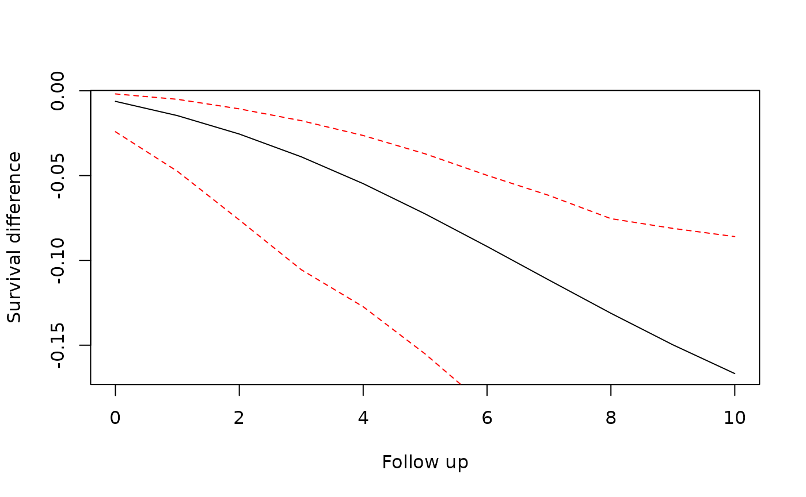

To improve usability, we have implemented a new user interface. This allows a more structured specification of the target trial emulation process.
It also gives flexibility to add new methods and tools for parts of
the analysis. For example, we now allow different ways of storing the
expanded data: as CSV files and in a DuckDB database. We also allow
different weight fitting model procedures: using stats::glm
or parglm::parglm. New components can quickly and easily be
specified for use with this package.
User Interface
A sequence of target trials analysis starts by specifying which estimand will be used:
trial_pp <- trial_sequence(estimand = "PP") # Per-protocol
trial_itt <- trial_sequence(estimand = "ITT") # Intention-to-treatAdditionally it is useful to create a directory to save files for later inspection.
trial_pp_dir <- file.path(tempdir(), "trial_pp")
dir.create(trial_pp_dir)
trial_itt_dir <- file.path(tempdir(), "trial_itt")
dir.create(trial_itt_dir)Observational Data
Next the user must specify the observational input data that will be used for the target trial emulation. Here we need to specify which columns contain which values and how they should be used.
data("data_censored")
trial_pp <- trial_pp |>
set_data(
data = data_censored,
id = "id",
period = "period",
treatment = "treatment",
outcome = "outcome",
eligible = "eligible"
)
# Function style without pipes
trial_itt <- set_data(
trial_itt,
data = data_censored,
id = "id",
period = "period",
treatment = "treatment",
outcome = "outcome",
eligible = "eligible"
)We can inspect our object by printing:
trial_itt
#> Trial Sequence Object
#> Estimand: Intention-to-treat
#>
#> Data:
#> - N: 725 observations from 89 patients
#> id period treatment x1 x2 x3 x4 age age_s
#> <int> <int> <num> <num> <num> <int> <num> <num> <num>
#> 1: 1 0 1 1 1.146148362 0 0.7342030 36 0.08333333
#> 2: 1 1 1 1 0.002200337 0 0.7342030 37 0.16666667
#> ---
#> 724: 99 6 1 1 -0.033762356 1 0.5752681 71 3.00000000
#> 725: 99 7 0 0 -1.340496520 1 0.5752681 72 3.08333333
#> outcome censored eligible time_on_regime
#> <num> <int> <num> <num>
#> 1: 0 0 1 0
#> 2: 0 0 0 1
#> ---
#> 724: 0 0 0 1
#> 725: 1 0 0 2
#>
#> IPW for informative censoring:
#> - No weight model specified
#>
#> Sequence of Trials Data:
#> - Use set_expansion_options() and expand_trials() to construct the sequence of trials dataset.
#>
#> Outcome model:
#> - Outcome model not specified. Use set_outcome_model()We see the newly attached data. Some pre-processing has occurred: the id, period, treatment, outcome and eligible columns are renamed to have those names, and some additional columns required for later processing have been created. We also see some hints that other components of the analysis are not yet defined.
Weight Models
To adjust for the effects of informative censoring, inverse probability of censoring weights (IPCW) can be applied. To estimate these weights, we construct time-to-(censoring-)event models. Two sets of models are fit for the two censoring mechanisms which may apply: censoring due to deviation from assigned treatment and other informative censoring.
The data which will be used for fitting those weight models is
accessible with the ipw_data method.
ipw_data(trial_itt)
#> Key: <id>
#> Indices: <first>, <am_1>
#> id period treatment x1 x2 x3 x4 age age_s
#> <int> <int> <num> <num> <num> <int> <num> <num> <num>
#> 1: 1 0 1 1 1.146148362 0 0.7342030 36 0.08333333
#> 2: 1 1 1 1 0.002200337 0 0.7342030 37 0.16666667
#> 3: 1 2 1 0 -0.481762418 0 0.7342030 38 0.25000000
#> 4: 1 3 1 0 0.007872396 0 0.7342030 39 0.33333333
#> 5: 1 4 1 1 0.216053715 0 0.7342030 40 0.41666667
#> ---
#> 721: 99 3 0 0 -0.747905701 1 0.5752681 68 2.75000000
#> 722: 99 4 0 0 -0.790056043 1 0.5752681 69 2.83333333
#> 723: 99 5 1 1 0.387429397 1 0.5752681 70 2.91666667
#> 724: 99 6 1 1 -0.033762356 1 0.5752681 71 3.00000000
#> 725: 99 7 0 0 -1.340496520 1 0.5752681 72 3.08333333
#> outcome censored eligible time_of_event first am_1 cumA switch
#> <num> <int> <num> <num> <lgcl> <num> <num> <num>
#> 1: 0 0 1 9999 TRUE 0 1 0
#> 2: 0 0 0 9999 FALSE 1 2 0
#> 3: 0 0 0 9999 FALSE 1 3 0
#> 4: 0 0 0 9999 FALSE 1 4 0
#> 5: 0 0 0 9999 FALSE 1 5 0
#> ---
#> 721: 0 0 0 7 FALSE 0 2 0
#> 722: 0 0 0 7 FALSE 0 2 0
#> 723: 0 0 0 7 FALSE 0 3 1
#> 724: 0 0 0 7 FALSE 1 4 0
#> 725: 1 0 0 7 FALSE 1 4 1
#> regime_start time_on_regime eligible0 eligible1
#> <int> <num> <num> <num>
#> 1: 0 0 1 0
#> 2: 0 1 0 1
#> 3: 0 2 0 1
#> 4: 0 3 0 1
#> 5: 0 4 0 1
#> ---
#> 721: 2 1 1 0
#> 722: 2 2 1 0
#> 723: 5 3 1 0
#> 724: 5 1 0 1
#> 725: 7 2 0 1Censoring due to treatment switching
We specify model formulas to be used for calculating the probability
of receiving treatment in the current period. Separate models are fitted
for patients who had treatment = 1 and those who had
treatment = 0 in the previous period. Stabilized weights
are used by fitting numerator and denominator models.
There are optional arguments to specify columns which can include/exclude observations from the treatment models. These are used in case it is not possible for a patient to deviate from a certain treatment assignment in that period.
trial_pp <- trial_pp |>
set_switch_weight_model(
numerator = ~age,
denominator = ~ age + x1 + x3,
model_fitter = stats_glm_logit(save_path = file.path(trial_pp_dir, "switch_models"))
)
trial_pp@switch_weights
#> - Numerator formula: treatment ~ age
#> - Denominator formula: treatment ~ age + x1 + x3
#> - Model fitter type: te_stats_glm_logit
#> - Weight models not fitted. Use calculate_weights()This type of censoring is not used with an ITT estimand, so we cannot
use set_switch_weight_model() with trial_ITT
objects. Note that we calculated stabilised weights, so a numerator and
denominator model is required. The numerator should contain terms that
are not time varying. These terms are later included in the final
time-to-event model for the outcome.
Other informative censoring
In case there is other informative censoring occurring in the data,
we can create similar models to estimate the IPCW. These can be used
with all types of estimand. Compared to
set_switch_weight_model there are additional required
arguments:
-
censor_eventwhich specifies the column containing the censoring indicator -
pool_modelswhich species that models may be fit separately (as inset_switch_weight_model) or pooled across the treatments in the previous period. The choices are"none","both", or"numerator"only. The default and allowed choices depends on the estimand.
trial_pp <- trial_pp |>
set_censor_weight_model(
censor_event = "censored",
numerator = ~x2,
denominator = ~ x2 + x1,
pool_models = "none",
model_fitter = stats_glm_logit(save_path = file.path(trial_pp_dir, "switch_models"))
)
trial_pp@censor_weights
#> - Numerator formula: 1 - censored ~ x2
#> - Denominator formula: 1 - censored ~ x2 + x1
#> - Model fitter type: te_stats_glm_logit
#> - Weight models not fitted. Use calculate_weights()
trial_itt <- set_censor_weight_model(
trial_itt,
censor_event = "censored",
numerator = ~x2,
denominator = ~ x2 + x1,
pool_models = "numerator",
model_fitter = stats_glm_logit(save_path = file.path(trial_itt_dir, "switch_models"))
)
trial_itt@censor_weights
#> - Numerator formula: 1 - censored ~ x2
#> - Denominator formula: 1 - censored ~ x2 + x1
#> - Numerator model is pooled across treatment arms. Denominator model is not pooled.
#> - Model fitter type: te_stats_glm_logit
#> - Weight models not fitted. Use calculate_weights()Calculate Weights
Next we need to fit the individual models and combine them into
weights. This is done with calculate_weights().
trial_pp <- trial_pp |> calculate_weights()
trial_itt <- calculate_weights(trial_itt)The full model objects are saved to disk in the directories we created above. The summaries are stored in the trial sequence object and can be printed:
show_weight_models(trial_itt)
#> Weight Models for Informative Censoring
#> ---------------------------------------
#>
#> [[n]]
#> Model: P(censor_event = 0 | X) for numerator
#>
#> term estimate std.error statistic p.value
#> (Intercept) 2.4480907 0.1405726 17.415128 6.334656e-68
#> x2 -0.4486482 0.1368765 -3.277759 1.046346e-03
#>
#> null.deviance df.null logLik AIC BIC deviance df.residual nobs
#> 404.2156 724 -196.7002 397.4004 406.5727 393.4004 723 725
#>
#> path
#> /tmp/Rtmppi2San/trial_itt/switch_models/model_21a41c3528be.rds
#>
#> [[d0]]
#> Model: P(censor_event = 0 | X, previous treatment = 0) for denominator
#>
#> term estimate std.error statistic p.value
#> (Intercept) 1.8941961 0.2071122 9.145746 5.921948e-20
#> x2 -0.5898292 0.1693402 -3.483101 4.956409e-04
#> x1 0.8552603 0.3452930 2.476912 1.325247e-02
#>
#> null.deviance df.null logLik AIC BIC deviance df.residual nobs
#> 283.0723 425 -132.1655 270.3309 282.4943 264.3309 423 426
#>
#> path
#> /tmp/Rtmppi2San/trial_itt/switch_models/model_21a44602e0c8.rds
#>
#> [[d1]]
#> Model: P(censor_event = 0 | X, previous treatment = 1) for denominator
#>
#> term estimate std.error statistic p.value
#> (Intercept) 2.81443372 0.3122688 9.0128570 2.007570e-19
#> x2 -0.03713196 0.2699579 -0.1375472 8.905983e-01
#> x1 0.89351418 0.7771954 1.1496648 2.502819e-01
#>
#> null.deviance df.null logLik AIC BIC deviance df.residual nobs
#> 113.0528 298 -55.72938 117.4588 128.5601 111.4588 296 299
#>
#> path
#> /tmp/Rtmppi2San/trial_itt/switch_models/model_21a440e6b898.rds
#> Specify Outcome Model
Now we can specify the outcome model. Here we can include adjustment
terms for any variables in the dataset. We can also specify how
followup_time and trial_period terms should be
included in the model. As for the weight models, we can specify a
model_fitter. The numerator terms from the stabilised
weight models are automatically included in the outcome model
formula.
trial_pp <- set_outcome_model(trial_pp)
trial_itt <- set_outcome_model(trial_itt, adjustment_terms = ~x2)It is necessary to specify the outcome model at this stage because we need to know which columns should be retained and expanded in the construction of the sequence of trials data set. After expansion it is possible to set the outcome model again to modify how covariates are modelled, e.g. to add an interaction or squared term. To add a term for a variable not in the expanded data, the expansion procedure will need to be repeated.
Expand Trials
Now we are ready to create the data set with all of the sequence of target trials. First we specify some options for the expansion and then expand.
Set Expansion Options
There are two options to set
- output: specifies how and where the expanded data will be saved. As
it can be very large, we may need to save it to disk with CSV files or
DuckDB, using a
save_to_*function. - chunk_size: if the expanded data is too large to fit in memory, we need to process it in chunks by specifying how many patients are processed at one time.
trial_pp <- set_expansion_options(
trial_pp,
output = save_to_datatable(),
chunk_size = 500
)
trial_itt <- set_expansion_options(
trial_itt,
output = save_to_datatable(),
chunk_size = 500
)Other options for big data are to save to csv or DuckDB:
trial_pp <- trial_pp |>
set_expansion_options(
output = save_to_csv(file.path(trial_pp_dir, "trial_csvs")),
chunk_size = 500
)
trial_itt <- set_expansion_options(
trial_itt,
output = save_to_csv(file.path(trial_itt_dir, "trial_csvs")),
chunk_size = 500
)
trial_itt <- set_expansion_options(
trial_itt,
output = save_to_duckdb(file.path(trial_itt_dir, "trial_duckdb")),
chunk_size = 500
)
# For the purposes of this vignette the previous `save_to_datatable()` output
# option is used in the following code.Create Sequence of Trials Data
Now we are ready to construct the sequence of trials dataset using
the expand_trials() method. This can take some time for
large input data.
trial_pp <- expand_trials(trial_pp)
trial_itt <- expand_trials(trial_itt)The resulting object shows the settings used for the expansion and where the expanded data has been saved.
trial_pp@expansion
#> Sequence of Trials Data:
#> - Chunk size: 500
#> - Censor at switch: TRUE
#> - First period: 0 | Last period: Inf
#>
#> A TE Datastore Datatable object
#> N: 500 observations
#> id trial_period followup_time outcome weight treatment x2
#> <int> <int> <int> <num> <num> <num> <num>
#> 1: 1 0 0 0 1.0000000 1 1.1461484
#> 2: 1 0 1 0 0.8951447 1 1.1461484
#> ---
#> 499: 99 0 0 0 1.0000000 1 -0.3463778
#> 500: 99 0 1 0 1.0122336 1 -0.3463778
#> age assigned_treatment
#> <num> <num>
#> 1: 36 1
#> 2: 36 1
#> ---
#> 499: 65 1
#> 500: 65 1Sample or Load from Expanded Data
Now that the expanded data has been created, we can prepare the data
to fit the outcome model. For data that can fit comfortably in memory,
this is a trivial step using load_expanded_data. For large
datasets, it may be necessary to sample from the expanded by setting the
p_control argument. This sets the probability that an
observation withoutcome == 0 will be included in the loaded
data. A seed can be set for reproducibility. Additionally, a vector of
periods to include can be specified, eg period = 1:60,
and/or a subsetting condition,
subset_condition = "age > 65".
trial_itt <- load_expanded_data(trial_itt, seed = 1234, p_control = 0.5)The loaded data can be accessed and/or modified with
outcome_data().
x2_sq <- outcome_data(trial_itt)$x2^2
outcome_data(trial_itt)$x2_sq <- x2_sq
head(outcome_data(trial_itt))
#> id trial_period followup_time outcome weight treatment x2
#> <int> <int> <int> <num> <num> <num> <num>
#> 1: 15 0 0 1 1 1 -0.73652563
#> 2: 32 0 0 1 1 1 1.98613804
#> 3: 26 0 0 0 1 0 1.64332982
#> 4: 10 0 0 0 1 1 0.05091841
#> 5: 5 0 0 0 1 1 0.74909203
#> 6: 46 0 0 0 1 1 -0.88598258
#> assigned_treatment sample_weight x2_sq
#> <num> <num> <num>
#> 1: 1 1 0.542470010
#> 2: 1 1 3.944744297
#> 3: 0 2 2.700532894
#> 4: 1 2 0.002592685
#> 5: 1 2 0.561138869
#> 6: 1 2 0.784965131Fit Marginal Structural Model
To fit the outcome model we use fit_msm(). There are two
options to specify how weights are used in the model. First we can
select which weights columns are used, by default the product of columns
weight and sample_weight is used. We can also
apply a modifier function, for example, to trim large weights to some
fixed value or a percentile.
trial_itt <- fit_msm(
trial_itt,
weight_cols = c("weight", "sample_weight"),
modify_weights = function(w) {
q99 <- quantile(w, probs = 0.99)
pmin(w, q99)
}
)
#> Warning in eval(family$initialize): non-integer #successes in a binomial glm!
#> Warning: glm.fit: fitted probabilities numerically 0 or 1 occurredThe summary of the model fit is shown:
trial_itt@outcome_model
#> - Formula: outcome ~ assigned_treatment + x2 + followup_time + I(followup_time^2) + trial_period + I(trial_period^2)
#> - Treatment variable: assigned_treatment
#> - Adjustment variables: x2
#> - Model fitter type: te_stats_glm_logit
#>
#> Model Summary:
#>
#> term estimate std.error statistic p.value conf.low conf.high
#> (Intercept) -6.02 0.780 -7.72 1.2e-14 -7.550 -4.4916
#> assigned_treatment 1.63 0.496 3.28 1.0e-03 0.654 2.5977
#> x2 0.31 0.418 0.74 4.6e-01 -0.511 1.1282
#> followup_time 0.34 0.244 1.38 1.7e-01 -0.141 0.8148
#> I(followup_time^2) -0.02 0.014 -1.42 1.5e-01 -0.049 0.0077
#> trial_period 7.29 0.978 7.45 9.2e-14 5.371 9.2042
#> I(trial_period^2) -7.68 0.537 -14.31 2.0e-46 -8.738 -6.6320
#>
#> null.deviance df.null logLik AIC BIC deviance df.residual nobs
#> 158 800 -69.1 152 185 135 794 801Depending on the model fitter used, we can also access the model
object. For the default stats::glm logistic model, we have
the glm object as well as the sandwich
variance-covariance matrix.
trial_itt@outcome_model@fitted@model$model
#>
#> Call: glm(formula = formula, family = binomial("logit"), data = data,
#> weights = weights, x = FALSE, y = FALSE)
#>
#> Coefficients:
#> (Intercept) assigned_treatment x2 followup_time
#> -6.02067 1.62585 0.30837 0.33673
#> I(followup_time^2) trial_period I(trial_period^2)
#> -0.02049 7.28762 -7.68478
#>
#> Degrees of Freedom: 800 Total (i.e. Null); 794 Residual
#> Null Deviance: 157.8
#> Residual Deviance: 134.7 AIC: 152.2
trial_itt@outcome_model@fitted@model$vcov
#> (Intercept) assigned_treatment x2 followup_time
#> (Intercept) 0.608651263 -0.007606479 0.042942422 -0.143451214
#> assigned_treatment -0.007606479 0.245882729 0.087953406 -0.052364376
#> x2 0.042942422 0.087953406 0.174977954 -0.045052691
#> followup_time -0.143451214 -0.052364376 -0.045052691 0.059487800
#> I(followup_time^2) 0.007130666 0.002815736 0.002843807 -0.003362158
#> trial_period -0.105885453 -0.341609248 -0.097440741 0.104454026
#> I(trial_period^2) 0.049055894 0.165009684 0.046219048 -0.054969078
#> I(followup_time^2) trial_period I(trial_period^2)
#> (Intercept) 0.0071306658 -0.105885452 0.04905589
#> assigned_treatment 0.0028157357 -0.341609248 0.16500968
#> x2 0.0028438066 -0.097440741 0.04621905
#> followup_time -0.0033621580 0.104454026 -0.05496908
#> I(followup_time^2) 0.0002067028 -0.005143791 0.00265172
#> trial_period -0.0051437905 0.956232062 -0.51353487
#> I(trial_period^2) 0.0026517200 -0.513573594 0.28851494The complete object shows all the specifications:
trial_itt
#> Trial Sequence Object
#> Estimand: Intention-to-treat
#>
#> Data:
#> - N: 725 observations from 89 patients
#> id period treatment x1 x2 x3 x4 age age_s
#> <int> <int> <num> <num> <num> <int> <num> <num> <num>
#> 1: 1 0 1 1 1.146148362 0 0.7342030 36 0.08333333
#> 2: 1 1 1 1 0.002200337 0 0.7342030 37 0.16666667
#> ---
#> 724: 99 6 1 1 -0.033762356 1 0.5752681 71 3.00000000
#> 725: 99 7 0 0 -1.340496520 1 0.5752681 72 3.08333333
#> outcome censored eligible time_on_regime wt wtC
#> <num> <int> <num> <num> <num> <num>
#> 1: 0 0 1 0 0.9835463 0.9835463
#> 2: 0 0 0 1 0.9429254 0.9429254
#> ---
#> 724: 0 0 0 1 0.9440988 0.9440988
#> 725: 1 0 0 2 1.0092093 1.0092093
#>
#> IPW for informative censoring:
#> - Numerator formula: 1 - censored ~ x2
#> - Denominator formula: 1 - censored ~ x2 + x1
#> - Numerator model is pooled across treatment arms. Denominator model is not pooled.
#> - Model fitter type: te_stats_glm_logit
#> - View weight model summaries with show_weight_models()
#>
#> Sequence of Trials Data:
#> - Chunk size: 500
#> - Censor at switch: FALSE
#> - First period: 0 | Last period: Inf
#>
#> A TE Datastore Datatable object
#> N: 1558 observations
#> id trial_period followup_time outcome weight treatment x2
#> <int> <int> <int> <num> <num> <num> <num>
#> 1: 1 0 0 0 1.0000000 1 1.1461484
#> 2: 1 0 1 0 0.9429254 1 1.1461484
#> ---
#> 1557: 99 0 6 0 0.8917236 1 -0.3463778
#> 1558: 99 0 7 1 0.8999358 0 -0.3463778
#> assigned_treatment
#> <num>
#> 1: 1
#> 2: 1
#> ---
#> 1557: 1
#> 1558: 1
#>
#> Outcome model:
#> - Formula: outcome ~ assigned_treatment + x2 + followup_time + I(followup_time^2) + trial_period + I(trial_period^2)
#> - Treatment variable: assigned_treatment
#> - Adjustment variables: x2
#> - Model fitter type: te_stats_glm_logit
#>
#> Model Summary:
#>
#> term estimate std.error statistic p.value conf.low conf.high
#> (Intercept) -6.02 0.780 -7.72 1.2e-14 -7.550 -4.4916
#> assigned_treatment 1.63 0.496 3.28 1.0e-03 0.654 2.5977
#> x2 0.31 0.418 0.74 4.6e-01 -0.511 1.1282
#> followup_time 0.34 0.244 1.38 1.7e-01 -0.141 0.8148
#> I(followup_time^2) -0.02 0.014 -1.42 1.5e-01 -0.049 0.0077
#> trial_period 7.29 0.978 7.45 9.2e-14 5.371 9.2042
#> I(trial_period^2) -7.68 0.537 -14.31 2.0e-46 -8.738 -6.6320
#>
#> null.deviance df.null logLik AIC BIC deviance df.residual nobs
#> 158 800 -69.1 152 185 135 794 801
#>
#> Outcome data
#> N: 801 observations from 76 patients in 18 trial periods
#> Periods: 0 1 2 3 4 5 6 7 8 9 10 11 12 13 14 15 16 17
#> id trial_period followup_time outcome weight treatment x2
#> <int> <int> <int> <num> <num> <num> <num>
#> 1: 15 0 0 1 1.000000 1 -0.7365256
#> 2: 32 0 0 1 1.000000 1 1.9861380
#> ---
#> 800: 39 0 19 0 1.351756 1 0.2189413
#> 801: 54 0 19 0 1.359294 0 1.2924128
#> assigned_treatment sample_weight x2_sq w
#> <num> <num> <num> <num>
#> 1: 1 1 0.5424700 1.000000
#> 2: 1 1 3.9447443 1.000000
#> ---
#> 800: 1 2 0.0479353 2.703512
#> 801: 0 2 1.6703309 2.718587Inference
We use the predict() method to estimate survival
probabilities or cumulative incidences for different values of
assigned_treatment. The predict method takes
the baseline of the provided newdata, i.e. observations
with followup_time == 0 and constructs data with
followup_time for the given predict_times. It
is important to specify newdata correctly for a meaningful
interpretation of the differences in survival.
preds <- predict(
trial_itt,
newdata = outcome_data(trial_itt)[trial_period == 1, ],
predict_times = 0:10,
type = "survival",
)
plot(preds$difference$followup_time, preds$difference$survival_diff,
type = "l", xlab = "Follow up", ylab = "Survival difference"
)
lines(preds$difference$followup_time, preds$difference$`2.5%`, type = "l", col = "red", lty = 2)
lines(preds$difference$followup_time, preds$difference$`97.5%`, type = "l", col = "red", lty = 2)